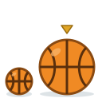
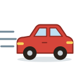
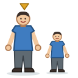

Unit 18
比較Comparing
大 / 細, 快 / 慢, 平 / 貴: A 比 B (西瓜比蘋果貴), the spoken 貴過, how much more, 冇…咁, 一樣, and 最 for the most.

LearnBigger, cheaper, fastest
Adjectives in pairs; A 比 B and 貴過; 好多 and 少少; 冇…咁 and 一樣; asking 邊個平啲呀？; and 最.
GameWhich Is Bigger
Which is cheaper, faster, the biggest? Is 西瓜比蘋果平 right? How much older is your sister?

GameTone Detective
Hear adjectives and comparisons and pick their tones. 快 or 慢? 高 or 矮?

SpeakingSay It Back
Record yourself and compare your tones with a native speaker's pitch curve.